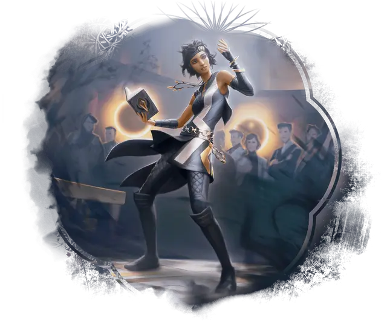

Ученик с Сильверквилла
Silverquill Apprentice
Маленький или Средний Гуманоид (Бард), любое мировоззрение

Класс Доспеха 12 (15 с доспехом мага)
Хиты 44 (8к8 + 8)
Скорость 30 футов
| мод | спас | ||
|---|---|---|---|
| СИЛ | 10 | +0 | +0 |
| ЛОВ | 14 | +2 | +4 |
| ТЕЛ | 13 | +1 | +1 |
| мод | спас | ||
|---|---|---|---|
| ИНТ | 12 | +1 | +1 |
| МДР | 11 | +0 | +0 |
| ХАР | 15 | +2 | +4 |
Навыки Выступление +6, Обман +4, Убеждение +6
Чувства пассивное Восприятие 10
Языки Общий, и два любых языка
Опасность 2 (450 опыта)
Бонус мастерства +2
Действия
Чернильный клинок. Рукопашная или дальнобойная атака заклинанием: +4 к попаданию, досягаемость 5 футов или дистанция 60 футов, одна цель. Попадание: 5 (1к6 + 2) колющего урона плюс 9 (2к8) урона психической энергией.
Использование заклинаний. Ученик накладывает одно из следующих заклинаний, используя Харизму в качестве базовой характеристики (Сл спасброска от заклинаний 12):
• Неограниченно: пляшущие огоньки [dancing lights], дружба [friends];
• 1/день каждое: приказ [command], доспехи мага [mage armor].
Реакции
Зажигательный стих. Когда существо, которое ученик видит в пределах 30 футов от себя, проваливает спасбросок, ученик волшебным образом сочиняет захватывающую прозу, позволяя существу повторить спасбросок и использовать более высокий результат.
Описание
Стильные и целеустремленные, студенты факультета Сильверквилл — сначала в качестве учеников, а затем в качестве магов клятвы — создают впечатляющие образы в кампусе. Одетые в элегантно отделанную черно-белую униформу, эти подающие надежды маги практикуются в подбадривающих речах и орудуют чернильными клинками.
Некоторые студенты Сильверквилла предпочитают доброжелательную сторону языка, используя свои слова, чтобы поднять настроение своим друзьям и осветить суровую правду о тех, кто находится у власти. Другие, однако, предпочитают использовать слова более беспощадно и овладевают искусством издёвок и деморализации (а в некоторых случаях и оскорблений). Несмотря на это, почти все члены факультета Сильверквилл ведут себя устрашающе, никогда не отступая - потому что в искусстве владения словами уверенность является ключевым фактором.
УЧЁНЫЕ Сильверквилла
Ученые факультета Сильверквилл изучают силу магии, выраженную в устных и письменных словах. Они используют эту силу либо для того, чтобы освещать и направлять, либо для того, чтобы затемнять и деморализовывать.